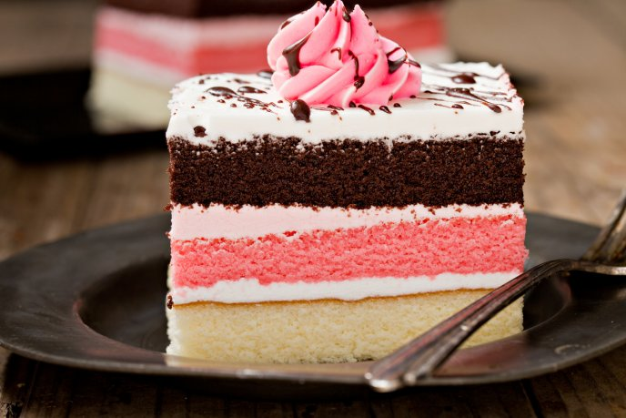

Pasteles

Preparar el bizcocho, pan o base del pastel de 3 leches es lo primero que haremos: para ello debemos batir los siguientes ingredientes (en este orden): mantequilla, azúcar, huevos uno a uno, la harina tamizada, el polvo hornear y la leche. Todos los ingredientes se irán incorporando poco a poco y se baten hasta que esté la mezcla bien homogénea.
Precalentamos el horno a 180 °C (o 360 ºF). Vierte la masa del pastel tres leches en un molde del número 22 (aproximadamente) preferiblemente engrasado o forrado con papel sulfurizado si este no es de silicona como en mi caso.
Horneamos el bizcocho del pastel de tres leches de 30 a 45 minutos. Lo dejamos unos 45 minutos pero debes ir mirando si está listo. Clavamos un cuchillo o un palillo de madera y estará listo el bizcochuelo cuando salga limpio. Después, lo sacamos del horno y dejamos reposar a temperatura ambiente para que se entibie.
Para hacer el baño, la cubierta o la crema tres leches (recibe varios nombres dependiendo del país proveniente) vamos a licuar las 2 leches (condensada, evaporada), el brandy, la media crema y la leche normal. Todo esto lo mezclaremos bien en una batidora.
Cuando el bizcocho esté un poco frío báñalo con la mezcla anterior y deja que se impregne bien, sin retirarlo del molde. Mientras tanto, prepara un merengue casero siguiendo los pasos de esta sencilla receta.
Cuando el bizcocho haya absorbido la mezcla del baño tenemos dos opciones: la primera es cubrir el pastel de 3 leches directamente con el merengue y decorarlo, o si no, podemos cortarlo por la mitad, colocar una base de merengue sobre una de las mitades, colocar la otra base de bizcocho encima, y cubrir todo el exterior de la torta con el merengue restante, es decir, rellenar el pastel 3 leches aparte de decorarlo por arriba.
Decoramos el pastel de tres leches con el merengue que hemos preparado en el paso anterior como hayamos elegido ¡y a disfrutar! Esta receta es ideal para una celebración, cumpleaños o fiesta especial como puedes comprobar.